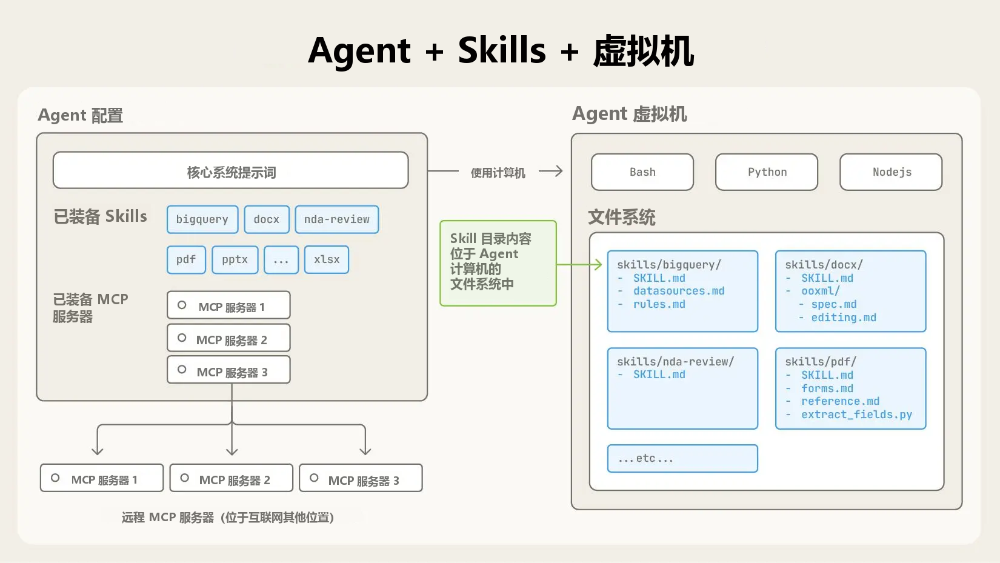
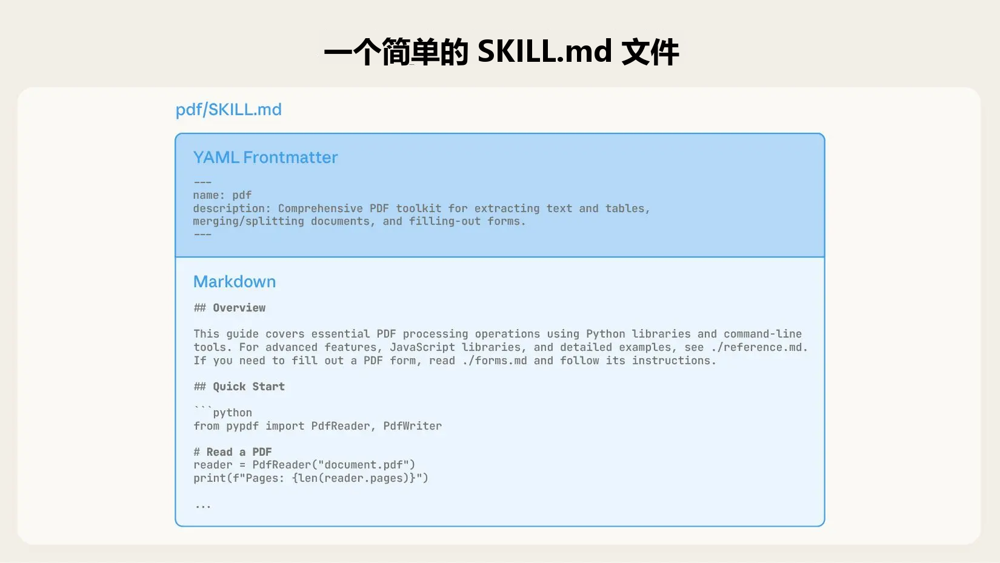
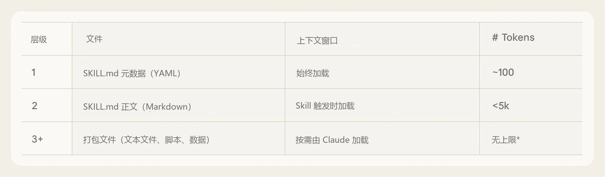
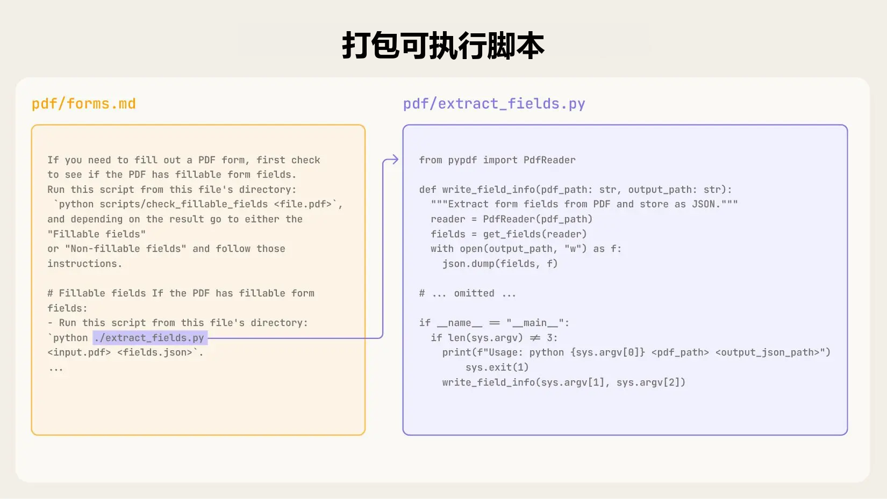
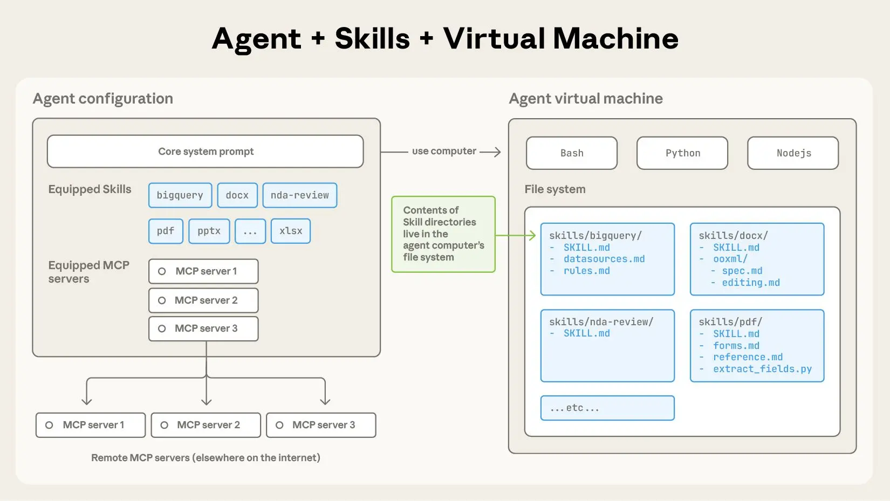
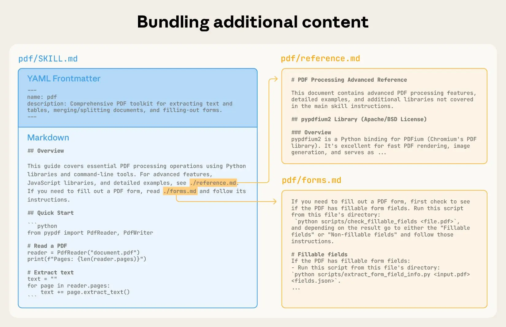
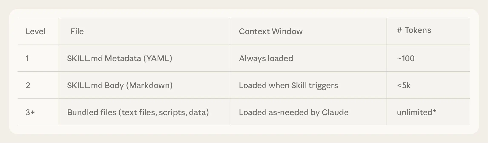
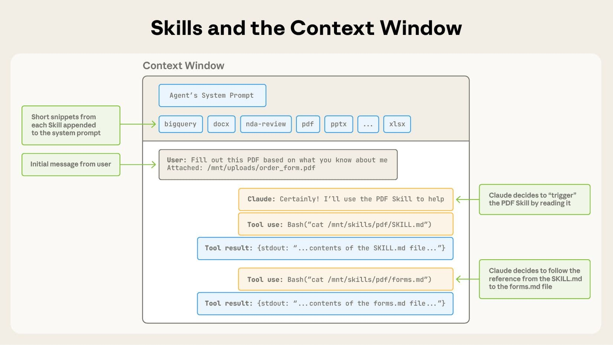
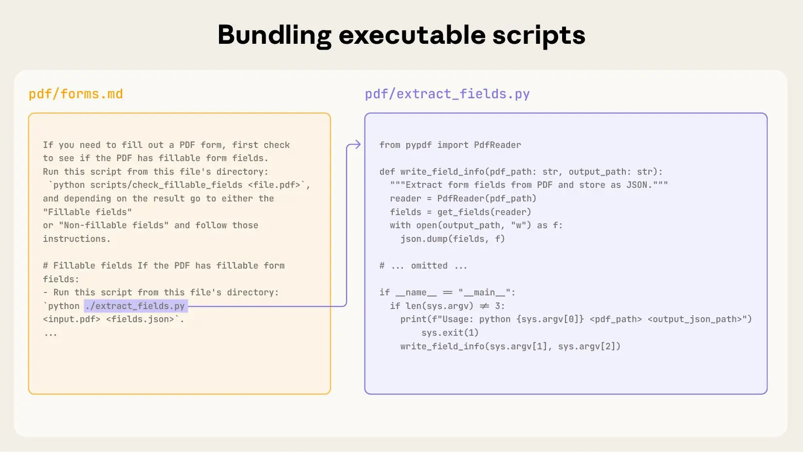

用 Agent Skills 为智能体装备应对真实世界的能力
📖 中文摘要
专业术语注解
Agent Skills：由指令、脚本与资源组成的文件夹，供智能体按需加载以扩展能力渐进式披露：分层暴露信息，先给元数据，需要时再加载正文与附件YAML前置元数据：文件开头用YAML写的name、description等描述字段系统提示词：对话开始前注入、用于设定模型行为与可用能力的指令确定性代码：相同输入必定产生相同输出的传统程序，常用于排序、解析等任务📄 中文全文
- 类别： 工程（Engineering）
- 来源： https://www.anthropic.com/research/equipping-agents-for-the-real-world-with-agent-skills
工程（Engineering） 2025 年 10 月 16 日 已发布 2025 年 10 月 16 日 团队 工程 主题
相关文章 * 工程 2026 年 2 月 5 日 用一支并行 Claude 团队构建 C 编译器
阅读更多 * 2025 年 12 月 18 日
更新
我们已将 Agent Skills 发布为一项开放标准，以实现跨平台的可移植性。 阅读更多
随着模型能力的提升，我们现在能够构建与完整计算环境交互的通用智能体。例如，Claude Code 就能借助本地代码执行与文件系统，完成跨领域的复杂任务。但随着这些智能体变得越来越强大，我们需要更具可组合性、可扩展且可移植的方式，为它们装备特定领域的专业知识。 这促使我们创建了 Agent Skills：由指令、脚本与资源组成的有序文件夹，智能体可以动态发现并加载它们，从而在特定任务上表现得更好。**** Skills 通过将你的专业知识打包成供 Claude 使用的可组合资源来扩展 Claude 的能力，把通用智能体转变为契合你需求的专用智能体。 为智能体构建一项技能，就像为新员工编写一份入职指南。如今，任何人都不必再为每个用例打造零散的、定制设计的智能体，而是可以通过捕捉并分享自己的流程性知识，用可组合的能力来定制自己的智能体。在本文中，我们将解释 Skills 是什么、展示它们如何工作，并分享构建你自己的技能的最佳实践。

一项技能就是一个包含 SKILL.md 文件的目录，其中含有组织有序的指令、脚本与资源文件夹，为智能体提供额外的能力。技能的结构
为了看清 Skills 的实际运作，我们来看一个真实例子：支撑 Claude 近期推出的文档编辑能力 的技能之一。Claude 已经相当擅长理解 PDF，但直接操作 PDF 的能力有限（例如填写表单）。这个 PDF 技能 让我们能够赋予 Claude 这些新能力。
最简单的情况下，一项技能就是一个包含 SKILL.md file 的目录。该文件必须以 YAML frontmatter 开头，其中包含一些必需的元数据：name 和 description。启动时，智能体会把每个已安装技能的 name 和 description 预加载到自己的系统提示词中。
这些元数据是_渐进式披露_（progressive disclosure）的第一层：它只提供恰到好处的信息，让 Claude 知道何时应使用哪项技能，而无需把全部内容加载进上下文。该文件的实际正文则是细节的第二层。如果 Claude 认为某项技能与当前任务相关，它会通过把完整的 SKILL.md 读入上下文来加载该技能。

SKILL.md 文件必须以 YAML Frontmatter 开头，其中包含文件名与描述，这些内容会在启动时加载进其系统提示词。 随着技能变得越来越复杂，它们可能包含过多上下文，无法全部放进单个SKILL.md；或者某些上下文只在特定场景下才相关。在这些情况下，技能可以在技能目录内打包额外的文件，并在 SKILL.md 中按名称引用它们。这些额外链接的文件构成细节的第三层（乃至更多层），Claude 可以只在需要时选择去浏览与发现它们。
在下面展示的 PDF 技能中，SKILL.md 引用了技能作者选择随核心 SKILL.md 一起打包的两个额外文件（reference.md 和 forms.md）。通过把填写表单的指引移到单独的文件（forms.md）里，技能作者得以让技能的核心保持精简，并确信 Claude 只会在填写表单时才去读取 forms.md。
 你可以通过额外文件把更多上下文纳入自己的技能，Claude 随后可依据系统提示词来触发这些上下文。
渐进式披露是让 Agent Skills 兼具灵活性与可扩展性的核心设计原则。就像一本组织良好的手册，先给出目录，再是具体章节，最后是详尽的附录，技能让 Claude 只在需要时才加载信息：
你可以通过额外文件把更多上下文纳入自己的技能，Claude 随后可依据系统提示词来触发这些上下文。
渐进式披露是让 Agent Skills 兼具灵活性与可扩展性的核心设计原则。就像一本组织良好的手册，先给出目录，再是具体章节，最后是详尽的附录，技能让 Claude 只在需要时才加载信息：

拥有文件系统与代码执行工具的智能体，在处理某项特定任务时，并不需要把一项技能的全部内容读入自己的上下文窗口。这意味着，能够打包进一项技能的上下文量实际上是没有上限的。Skills 与上下文窗口
下图展示了当用户消息触发某项技能时，上下文窗口会如何变化。
 技能通过你的系统提示词在上下文窗口中被触发。
图中所示的操作顺序：
1. 一开始，上下文窗口中包含核心系统提示词、每个已安装技能的元数据，以及用户的初始消息；
2. Claude 通过调用 Bash 工具读取
技能通过你的系统提示词在上下文窗口中被触发。
图中所示的操作顺序：
1. 一开始，上下文窗口中包含核心系统提示词、每个已安装技能的元数据，以及用户的初始消息；
2. Claude 通过调用 Bash 工具读取 pdf/SKILL.md 的内容来触发 PDF 技能；
3. Claude 选择读取随该技能打包的 forms.md 文件；
4. 最后，Claude 已从 PDF 技能加载了相关指引，于是继续执行用户的任务。
Skills 与代码执行
技能还可以包含代码，供 Claude 自行判断、作为工具来执行。 大型语言模型擅长许多任务，但某些操作更适合用传统代码执行来完成。例如，通过生成 token 来给列表排序，远比直接运行一个排序算法昂贵得多。除了效率考量之外，许多应用还要求只有代码才能提供的确定性可靠性。 在我们的例子里，PDF 技能包含一段预先写好的 Python 脚本，用于读取 PDF 并提取所有表单字段。Claude 可以运行这段脚本，而无需把脚本或 PDF 加载进上下文。而且由于代码是确定性的，这一工作流既一致又可重复。

技能还可以包含代码，让 Claude 依据任务的性质自行判断、作为工具来执行。开发与评估技能
以下是一些着手编写与测试技能时的实用指南：
* 从评估入手： 让智能体在具有代表性的任务上运行，观察它们在哪里遇到困难、哪里需要额外上下文，以此找出能力上的具体缺口。然后逐步构建技能来弥补这些不足。
* 为规模而设计结构： 当 SKILL.md 文件变得臃肿时，把它的内容拆分成单独的文件并加以引用。如果某些上下文彼此互斥、或很少一起用到，让路径保持分离能减少 token 用量。最后，代码既可以作为可执行工具，也可以作为文档。应当明确 Claude 是直接运行脚本，还是把它们作为参考读入上下文。
* 从 Claude 的视角思考： 观察 Claude 在真实场景中如何使用你的技能，并据此迭代：留意意料之外的轨迹，或对某些上下文的过度依赖。要特别关注技能的 name 和 description，Claude 在决定是否为当前任务触发该技能时会用到它们。
* 与 Claude 一起迭代： 在你和 Claude 共同处理一项任务时，让 Claude 把成功的做法与常见的失误沉淀为技能中可复用的上下文与代码。如果它在使用技能完成任务时偏离了正轨，就让它自我反思问题出在哪里。这一过程会帮助你发现 Claude 真正需要哪些上下文，而不必一开始就试图把它们全部预判出来。
使用 Skills 时的安全考量
技能通过指令与代码为 Claude 提供新的能力。这虽然让它们很强大，但也意味着恶意技能可能在其被使用的环境中引入漏洞，或指使 Claude 外泄数据、采取意料之外的行动。 我们建议只从可信来源安装技能。若要从可信度较低的来源安装技能，请在使用前彻底审查。先阅读技能中打包的文件内容，弄清它会做什么，尤其留意代码依赖，以及图片或脚本之类的打包资源。同样，也要留意技能中指示 Claude 连接到可能不可信的外部网络来源的指令或代码。
Skills 的未来
Agent Skills 目前已获得支持，覆盖 Claude.ai、Claude Code、Claude Agent SDK 以及 Claude Developer Platform。 在接下来的几周里，我们会持续增加功能，覆盖创建、编辑、发现、分享与使用 Skills 的完整生命周期。我们尤其期待 Skills 能帮助组织与个人同 Claude 分享自己的上下文与工作流。我们还将探索 Skills 如何与 模型上下文协议（MCP）服务器形成互补，教会智能体涉及外部工具与软件的更复杂工作流。 更长远地看，我们希望让智能体能够自行创建、编辑与评估 Skills，把它们自身的行为模式固化为可复用的能力。 Skills 是一个简单的概念，其格式也同样简单。这种简洁让组织、开发者与最终用户更容易构建定制化的智能体，并赋予它们新的能力。 我们很期待看到人们用 Skills 构建出什么。今天就从我们的 Skills 文档与示例手册开始吧。
作者与致谢
致谢
作者：Barry Zhang、Keith Lazuka 和 Mahesh Murag，他们都非常喜欢文件夹。特别感谢 Anthropic 内部许多其他倡导、支持并构建了 Skills 的同事。
▸ 英文原文（点击展开）
Equipping agents for the real world with Agent Skills
- Date: 2025-10-16
- Category: Dec 18, 2025
- Source: https://www.anthropic.com/research/equipping-agents-for-the-real-world-with-agent-skills
Equipping agents for the real world with Agent Skills
Published Oct 16, 2025 Team Engineering Topics
Related articles * Engineering Feb 5, 2026 Building a C compiler with a team of parallel Claudes
View more * Dec 18, 2025
Update
We've published Agent Skills as an open standard for cross-platform portability. View more
As model capabilities improve, we can now build general-purpose agents that interact with full-fledged computing environments. Claude Code, for example, can accomplish complex tasks across domains using local code execution and filesystems. But as these agents become more powerful, we need more composable, scalable, and portable ways to equip them with domain-specific expertise. This led us to create Agent Skills: organized folders of instructions, scripts, and resources that agents can discover and load dynamically to perform better at specific tasks.**** Skills extend Claude’s capabilities by packaging your expertise into composable resources for Claude, transforming general-purpose agents into specialized agents that fit your needs. Building a skill for an agent is like putting together an onboarding guide for a new hire. Instead of building fragmented, custom-designed agents for each use case, anyone can now specialize their agents with composable capabilities by capturing and sharing their procedural knowledge. In this article, we explain what Skills are, show how they work, and share best practices for building your own.

A skill is a directory containing a SKILL.md file that contains organized folders of instructions, scripts, and resources that give agents additional capabilities.The anatomy of a skill
To see Skills in action, let’s walk through a real example: one of the skills that powers Claude’s recently launched document editing abilities. Claude already knows a lot about understanding PDFs, but is limited in its ability to manipulate them directly (e.g. to fill out a form). This PDF skill lets us give Claude these new abilities.
At its simplest, a skill is a directory that contains a SKILL.md file. This file must start with YAML frontmatter that contains some required metadata: name and description. At startup, the agent pre-loads the name and description of every installed skill into its system prompt.
This metadata is the first level of progressive disclosure : it provides just enough information for Claude to know when each skill should be used without loading all of it into context. The actual body of this file is the second level of detail. If Claude thinks the skill is relevant to the current task, it will load the skill by reading its full SKILL.md into context.
 A SKILL.md file must begin with YAML Frontmatter that contains a file name and description, which is loaded into its system prompt at startup.
As skills grow in complexity, they may contain too much context to fit into a single
A SKILL.md file must begin with YAML Frontmatter that contains a file name and description, which is loaded into its system prompt at startup.
As skills grow in complexity, they may contain too much context to fit into a single SKILL.md, or context that’s relevant only in specific scenarios. In these cases, skills can bundle additional files within the skill directory and reference them by name from SKILL.md. These additional linked files are the third level (and beyond) of detail, which Claude can choose to navigate and discover only as needed.
In the PDF skill shown below, the SKILL.md refers to two additional files (reference.md and forms.md) that the skill author chooses to bundle alongside the core SKILL.md. By moving the form-filling instructions to a separate file (forms.md), the skill author is able to keep the core of the skill lean, trusting that Claude will read forms.md only when filling out a form.

You can incorporate more context (via additional files) into your skill that can then be triggered by Claude based on the system prompt. Progressive disclosure is the core design principle that makes Agent Skills flexible and scalable. Like a well-organized manual that starts with a table of contents, then specific chapters, and finally a detailed appendix, skills let Claude load information only as needed:
Agents with a filesystem and code execution tools don’t need to read the entirety of a skill into their context window when working on a particular task. This means that the amount of context that can be bundled into a skill is effectively unbounded.Skills and the context window
The following diagram shows how the context window changes when a skill is triggered by a user’s message.

Skills are triggered in the context window via your system prompt. The sequence of operations shown: 1. To start, the context window has the core system prompt and the metadata for each of the installed skills, along with the user’s initial message; 2. Claude triggers the PDF skill by invoking a Bash tool to read the contents ofpdf/SKILL.md;
3. Claude chooses to read the forms.md file bundled with the skill;
4. Finally, Claude proceeds with the user’s task now that it has loaded relevant instructions from the PDF skill.
Skills and code execution
Skills can also include code for Claude to execute as tools at its discretion. Large language models excel at many tasks, but certain operations are better suited for traditional code execution. For example, sorting a list via token generation is far more expensive than simply running a sorting algorithm. Beyond efficiency concerns, many applications require the deterministic reliability that only code can provide. In our example, the PDF skill includes a pre-written Python script that reads a PDF and extracts all form fields. Claude can run this script without loading either the script or the PDF into context. And because code is deterministic, this workflow is consistent and repeatable.

Skills can also include code for Claude to execute as tools at its discretion based on the nature of the task.Developing and evaluating skills
Here are some helpful guidelines for getting started with authoring and testing skills:
* Start with evaluation: Identify specific gaps in your agents’ capabilities by running them on representative tasks and observing where they struggle or require additional context. Then build skills incrementally to address these shortcomings.
* Structure for scale: When the SKILL.md file becomes unwieldy, split its content into separate files and reference them. If certain contexts are mutually exclusive or rarely used together, keeping the paths separate will reduce the token usage. Finally, code can serve as both executable tools and as documentation. It should be clear whether Claude should run scripts directly or read them into context as reference.
* Think from Claude’s perspective: Monitor how Claude uses your skill in real scenarios and iterate based on observations: watch for unexpected trajectories or overreliance on certain contexts. Pay special attention to the name and description of your skill. Claude will use these when deciding whether to trigger the skill in response to its current task.
* Iterate with Claude: As you work on a task with Claude, ask Claude to capture its successful approaches and common mistakes into reusable context and code within a skill. If it goes off track when using a skill to complete a task, ask it to self-reflect on what went wrong. This process will help you discover what context Claude actually needs, instead of trying to anticipate it upfront.
Security considerations when using Skills
Skills provide Claude with new capabilities through instructions and code. While this makes them powerful, it also means that malicious skills may introduce vulnerabilities in the environment where they’re used or direct Claude to exfiltrate data and take unintended actions. We recommend installing skills only from trusted sources. When installing a skill from a less-trusted source, thoroughly audit it before use. Start by reading the contents of the files bundled in the skill to understand what it does, paying particular attention to code dependencies and bundled resources like images or scripts. Similarly, pay attention to instructions or code within the skill that instruct Claude to connect to potentially untrusted external network sources.
The future of Skills
Agent Skills are supported today across Claude.ai, Claude Code, the Claude Agent SDK, and the Claude Developer Platform. In the coming weeks, we’ll continue to add features that support the full lifecycle of creating, editing, discovering, sharing, and using Skills. We’re especially excited about the opportunity for Skills to help organizations and individuals share their context and workflows with Claude. We’ll also explore how Skills can complement Model Context Protocol (MCP) servers by teaching agents more complex workflows that involve external tools and software. Looking further ahead, we hope to enable agents to create, edit, and evaluate Skills on their own, letting them codify their own patterns of behavior into reusable capabilities. Skills are a simple concept with a correspondingly simple format. This simplicity makes it easier for organizations, developers, and end users to build customized agents and give them new capabilities. We’re excited to see what people build with Skills. Get started today by checking out our Skills docs and cookbook.
Authors & acknowledgements
Acknowledgements
Written by Barry Zhang, Keith Lazuka, and Mahesh Murag, who all really like folders. Special thanks to the many others across Anthropic who championed, supported, and built Skills.